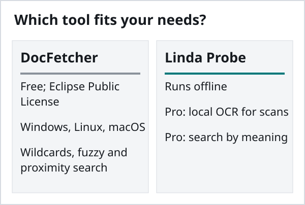
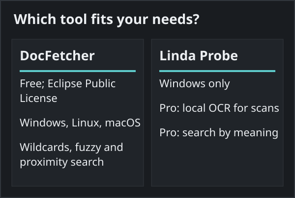
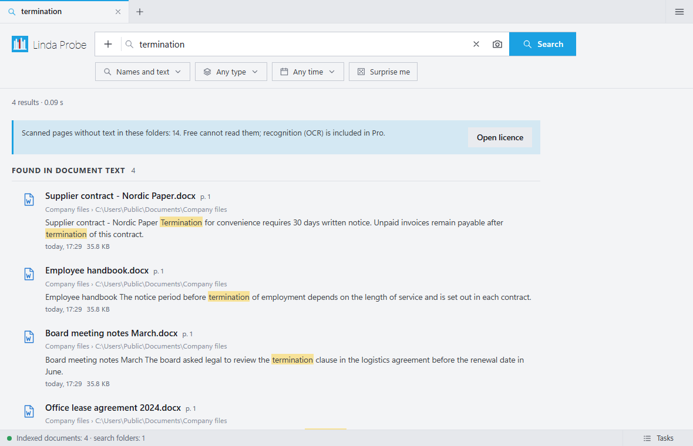

Linda Probe vs DocFetcher
Both programs search the text inside documents on your own computer. They suit different people, and for some of them DocFetcher is the better choice. This comparison uses the public DocFetcher site as of 30 October 2026.
Choose DocFetcher if
You want open source software (Eclipse Public License), you use Linux or macOS as well as Windows, or you rely on keyword tools such as wildcards, fuzzy and proximity search. Its authors also sell commercial DocFetcher Pro and DocFetcher Server editions.
Choose Linda Probe if
You are on Windows and your folders include scanned PDFs, or you often remember what a document was about but not the exact words. Probe Pro reads scans with OCR on your PC, searches by meaning and finds photos by description or example. The DocFetcher overview does not list built-in OCR or meaning-based search; we have not tested these capabilities.


What Linda Probe does not offer
It is closed source and runs only on Windows 10 and 11. The free edition covers file names and exact words only. OCR and meaning-based search require Probe Pro, unlocked with a paid or gift licence key. The GitHub installer is not code-signed yet, so Windows SmartScreen may show a notice: check the SHA-256 on the release page, then choose More info → Run anyway. The Microsoft Store version is signed by Microsoft; the GitHub build is often newer. OCR can make mistakes on poor scans and handwriting.

Price
Linda Probe Free is for personal, non-commercial use. Probe Pro Personal costs USD 10 once for one named user on up to 3 devices; Team costs USD 30 once for up to 10 named users on 20 devices. These cover the purchased version and fixes; future major versions or models may require payment. Organization costs USD 500 per year for one organization at one site on up to 200 devices and renews automatically until cancelled. Taxes and the final total appear before payment. Personal and Team include a full refund on request within 14 days.
DocFetcher is free and open source under the Eclipse Public License. DocFetcher Pro and DocFetcher Server are separate commercial products.